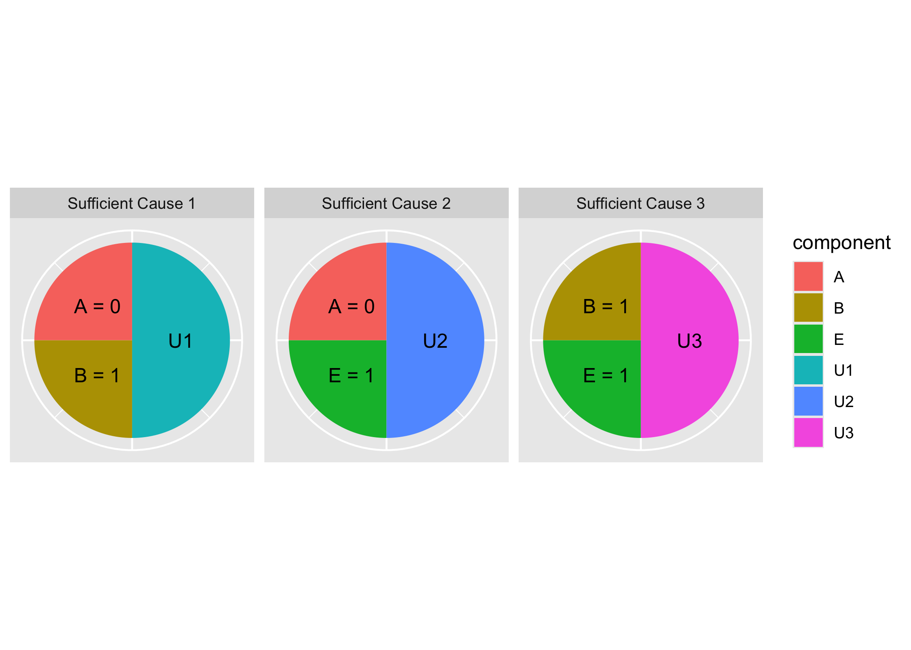
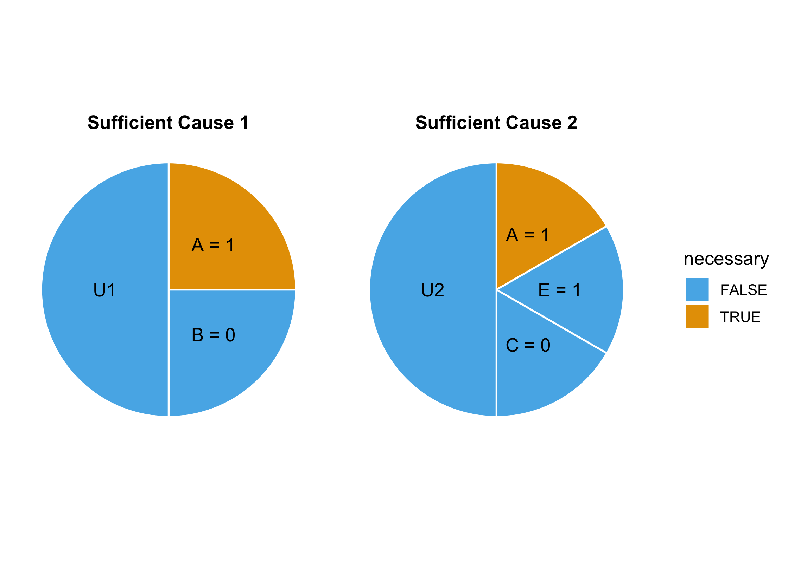

causalpie is an R package for creating tidy sufficient-component causal models. Create and analyze sufficient causes and plot them easily in ggplot2.
Installation
You can install the development version of causalpie from GitHub with:
# install.packages("devtools")
devtools::install_github("malcolmbarrett/causalpie")Sufficient causes and causal pies
The sufficient-component cause model (SCC), proposed by Kenneth Rothman in 1976, is a framework for understanding how events occur. Rothman, an epidemiologist, conceived of SCC to understand the causes of diseases.
Let’s consider an example about disease D. There may be many paths to a person developing D. We know that A, B, and E all cause D, but we don’t always need to have all three for D to occur. In SCC, A, B, and E are referred to as components. The components may combine in a multitude of ways to cause D. In fact, any of these combination will result in D:
- A = 0, B = 1
- A = 0, E = 1
- B = 1, E = 1
These different combinations are called sufficient causes, because they are sufficient to cause D. Any components that appear in all sufficient causes are called necessary causes.
In causalpie, you define causes using causify. Each sufficient cause is grouped by the sc() function, which takes named values (e.g. E = 1). By tradition, a component U is added to each sufficient cause to represent unknown components. This can be turned off by setting add_u = FALSE.
library(causalpie)
causes <- causify(sc(A = 0, B = 1),
sc(A = 0, E = 1),
sc(B = 1, E = 1))
causes
#> # A tibble: 9 × 5
#> component value label frac cause
#> <chr> <dbl> <chr> <dbl> <chr>
#> 1 A 0 A = 0 0.25 Sufficient Cause 1
#> 2 B 1 B = 1 0.25 Sufficient Cause 1
#> 3 U1 NA U1 0.5 Sufficient Cause 1
#> 4 A 0 A = 0 0.25 Sufficient Cause 2
#> 5 E 1 E = 1 0.25 Sufficient Cause 2
#> 6 U2 NA U2 0.5 Sufficient Cause 2
#> 7 B 1 B = 1 0.25 Sufficient Cause 3
#> 8 E 1 E = 1 0.25 Sufficient Cause 3
#> 9 U3 NA U3 0.5 Sufficient Cause 3You can plot the sufficient causes as pies in ggplot2 using causal_pie(), which highlights unique components, or causal_pie_necessary(), which highlights necessary causes.
causal_pie(causes)
Because both objects are ggplots, you can change themes, scales, and so on.
library(ggplot2)
causify(sc(A = 1, B = 0), sc(A = 1, E = 1, C = 0)) |>
causal_pie_necessary() +
theme_causal_pie() +
scale_fill_manual(values = c("#56B4E9", "#E69F00"))